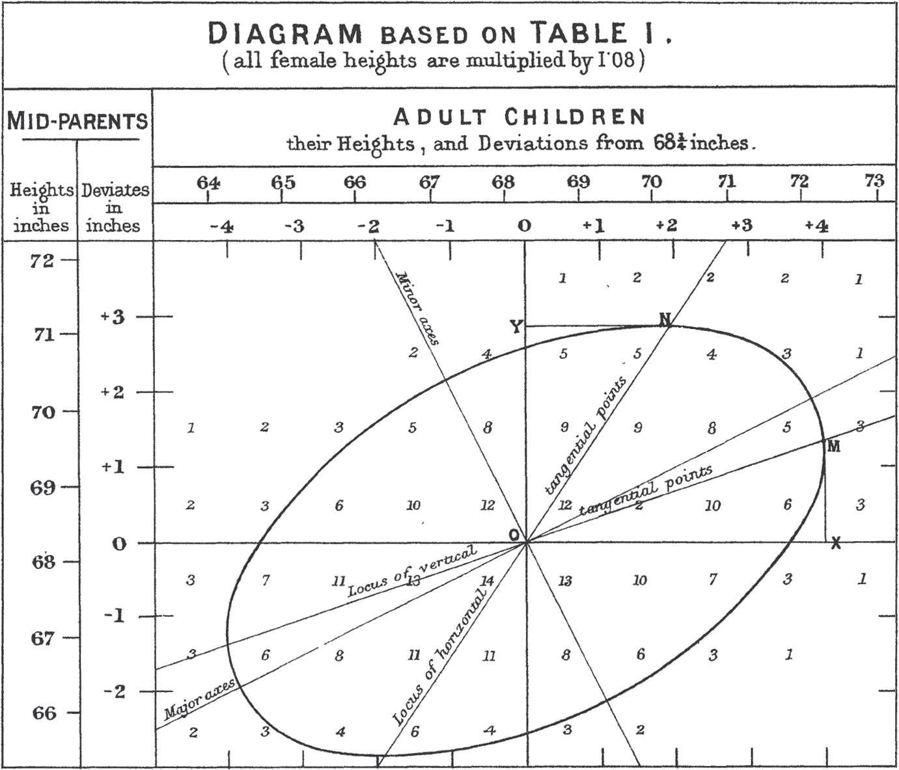

author: David Sichinava, Rati Shubladze date: December 6, 2017 autosize: true transition: none css: css/style.css font-family: 'BPG_upper' Eighth meeting
Todorov et. al. (2005) “Inferences of competence from faces predict election outcomes.” Science, vol. 308, no. 10 (June), pp. 1623–1626.
How can one predict election results based on facial appearance?
| Variable | Description |
|---|---|
| congress | Session of Congress |
| year | Year of the election |
| state | State of the election |
| winner | Name of the winner |
| loser | Name of the runner-up |
| w.party | Party of the winner |
| l.party | Party of the loser |
| d.votes | Number of votes for the Democratic candidate |
| r.votes | Number of votes for the Republican candidate |
| d.comp | Competence measure for the Democratic candidate |
| r.comp | Competence measure for the Republican candidate |
```r
face <- read.csv("face.csv")
face$d.share <- face$d.votes / (face$d.votes + face$r.votes) face$r.share <- face$r.votes / (face$d.votes + face$r.votes) face$diff.share <- face$d.share - face$r.share ``` Correlation: ======================================================== * What is the correlation between perceived competence and vote share differential?
r
cor(face$d.comp, face$diff.share)
r
library(ggplot2)
ggplot(face, aes(x=d.comp, y=diff.share)) +
geom_point(aes(color=w.party))+
labs(title="Facial competence and vote share",
x="Competence scores for Democrats",
y="Competence scores for Republicans")+
scale_color_manual(name="Winning party",
values=c("blue", "red"))
$Y = \alpha + \beta X + \epsilon$, where $\alpha$ is an intercept, $X$ independent (explanatory) variable, $\beta$ - regression coefficientS, $\epsilon$ error term.
$\hat{Y} = \hat{\alpha}+\hat{\beta} x$, where $x$ is some value of $X$;
$\hat{\epsilon} = Y-\hat{Y}$, where $x$ is some value of $X$;
r
fit <- lm(diff.share ~ d.comp, data = face) # fit the model
fit
r
ggplot(face, aes(x=d.comp, y=diff.share)) +
geom_point(aes(color=w.party))+
geom_smooth(method='lm')+
labs(title="Facial competence and vote share",
x="Competence scores for Democrats",
y="Competence scores for Republicans")+
scale_color_manual(name="Winning party",
values=c("blue", "red"))
r
epsilon.hat <- resid(fit) # Residuals
sqrt(mean(epsilon.hat^2)) # RMSE
$\hat{\alpha}=\bar{Y}-\hat{\beta}\bar{X}$
$\beta = corr(X, Y) * \frac{SD(Y)}{SD(X)}$

r
outlierTest(fit)
qqPlot(fit, main="QQ Plot")
leveragePlots(fit)
```r
av.Plots(fit)
cutoff <- 4/((nrow(face)-length(fit$coefficients)-2)) plot(fit, which=4, cook.levels=cutoff)
influencePlot(fit, id.method="identify", main="Influence Plot", sub="Circle size is proportial to Cook's Distance" ) ```
```r
qqPlot(fit, main="QQ Plot")
library(MASS) sresid <- studres(fit) hist(sresid, freq=FALSE, main="Distribution of Studentized Residuals") xfit<-seq(min(sresid),max(sresid),length=40) yfit<-dnorm(xfit) lines(xfit, yfit) ```
```r
ncvTest(fit)
spreadLevelPlot(fit) ```
r
vif(fit) # variance inflation factors
sqrt(vif(fit)) > 2 # problem?
```r
crPlots(fit)
ceresPlots(fit) ```
r
durbinWatsonTest(fit)